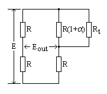
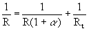
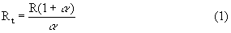
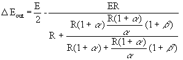
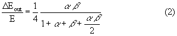

Балансировка моста Уитстона с помощью
подтягивающего резистора.
Влияние параметров подтягивающего резистора на разбаланс моста Уитстона.
Мост Уитстона достаточно часто применяется при конструировании различных типов датчиков (первичных преобразователей): измерителей усилия, перемещения, магнитного поля и т. д. Он позволяет получить более высокую чувствительность, линейность, температурную стабильность по сравнению с одиночными резисторами. В одну из диагоналей моста Уитстона включается источник питающего напряжения (постоянного или переменного), в другую – дифференциальный измерительный усилитель.
Наиболее простой способ балансировки моста Уитстона (установки нулевого выходного напряжения при нулевом значении измеряемого параметра) заключается в параллельном подключении к одному из его плеч подтягивающего резистора. Выбор плеча и величины подтягивающего резистора зависит от начальной разбалансировки моста. Параметры подтягивающего резистора (зависимость его сопротивления от времени, напряжения, температуры) оказывают влияние на точность измерений. Поэтому возникает задача оценки класса точности подтягивающего резистора, чтобы, с одной стороны, обеспечить необходимую точность измерений и, с другой стороны, не увеличивать затрат на приобретение прецизионных резисторов.
Для упрощения рассмотрим мост Уитстона (рис. 1), в котором сопротивление трех плеч одинаково и равно R, а одно из плеч имеет сопротивление R(1+a), где 0 <a<<1. Для балансировки моста параллельно этому плечу необходимо подключить подтягивающий резистор Rt.

Рис. 1. Мост Уитстона: E – напряжение питания, Eout – выходное напряжение, Rt – подтягивающий резистор.
Сопротивление подтягивающего резистора можно найти, используя формулу для параллельного включения резисторов:

Отсюда:

Например, для R = 500 Ом, a = 0.001 (отклонение в 0.1 %, т. е. один из резисторов имеет сопротивление 500.5 Ом) имеем Rt = 500500 Ом ~ 500 кОм.
Влияние факторов времени, температуры, напряжения приводит к тому, что сопротивление подтягивающего резистора, вначале равное величине Rt по формуле (1), может измениться до величины Rt(1 + b), где modb << 1.
При этом изменение выходного напряжения (разбаланс моста) составит:

Производя необходимые преобразования, получим:

Знаменатель второй дроби в выражении (2) при малых значениях a и b близок к единице. Таким образом, влияние погрешности b подтягивающего резистора тем меньше, чем лучше был изначально сбалансирован мост Уитстона (чем меньше a). Говоря иными словами, чем большая величина сопротивления подтягивающего резистора требуется для балансировки, тем меньшие требования предъявляются к классу его точности.
Пример:
Пусть R = 500 Ом,
a = 0.001,
b = 0.01 (уход сопротивления подтягивающего резистора
составляет 1 %), E = 5 В. Тогда:
по формуле (1) Rt = 500500
Ом ~ 500 кОм;
по формуле (2) DEout ~ 5000000 мкВ ∙ 0.25 ∙ 0.00001 = 12.5 мкВ.
Полученное значение величины разбаланса DEout необходимо сравнить с требуемой точностью измерений, приведенной ко входу дифференциального усилителя. Если они одинаковы по порядку величины, то необходимо использовать подтягивающий резистор более высокого класса точности.
22.12.2003
22.06.2010
Альтернативные источники
энергии
Компьютеры и
Интернет
Магнитные поля
Механотронные системы
Перспективные
разработки
Электроника и технология